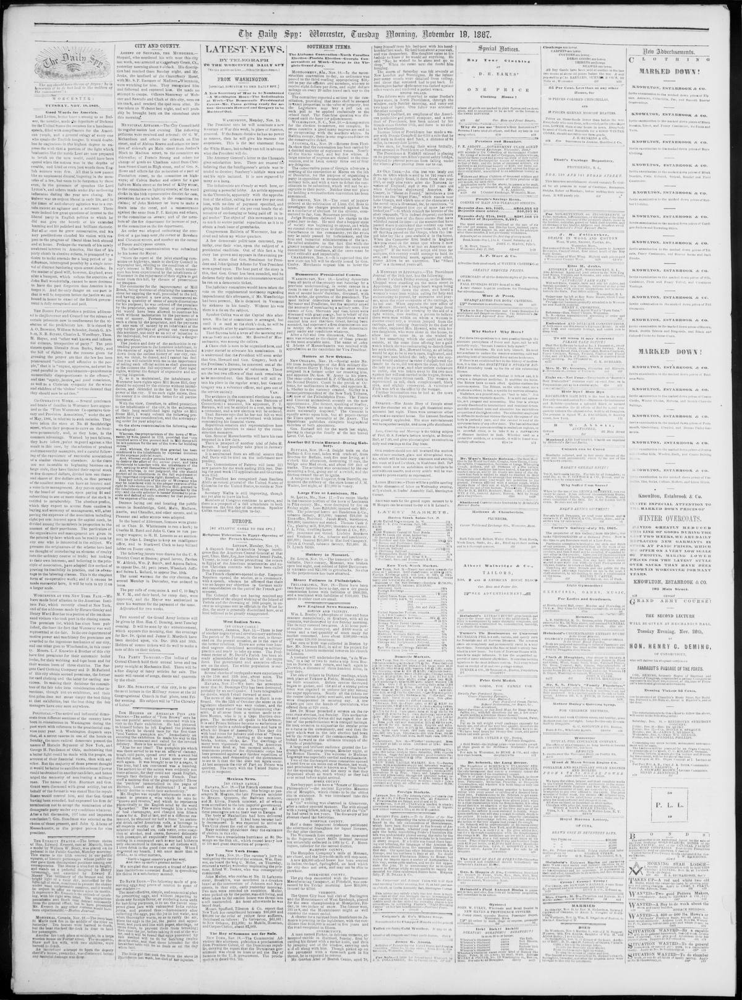

It is said Prince Salnave became so audacious as to secretly
https://www.loc.gov/resource/sn83021205/1867-11-19/ed-1/?sp=2

See the original pageVer la página original
HAVANA, Nov. 17—We have the announcement that St. Domingo City has been destroyed, probably by an earthquake. I have telegraphed for details, which I shall forward at once.
The news of the insurrection in Hayti is confirmed. On the 12th of October the scene in the legislative chambers was very violent, and the language used was of the most threatening character. It all arose from a motion made to relieve Montes, who is in a Cape Haytien dungeon. The members all spoke in his defence. It is said Prince Salnave became so audacious as to secretly incite a rabble of women and boys to attack the House of Assembly. This they did with loud vivas for Salnave and cries of “Down with the Assembly,” hurling at the same time bricks, bottles, sticks, &c. The dwellings of many were vigorously stoned. The American consul was fired at, but escaped unhurt. A unanimous protest of the diplomatic corps has been presented against any further repetition of such scenes, and demanding of the government to see to it that the like does not again occur. At last accounts the city of Port au Prince was quieting. The treaty with the United States is as yet in suspense.
From the original pageDe la página original
The passage where this article was found on the page, copied from the newspaper itself, reading errors and all.El pasaje donde se encontró este artículo en la página, copiado del propio periódico, con sus errores de lectura y todo.
legislative chambers was very violent, and tho
language used was of the most threatening char
acter. It all arose from a motion made to re
lieve Montes, who is in a Capo Haytien dun
geon. The members all spoke in his defence.
It is said Prince Salnave became so audacious as
to secretly incite a rabblo o(|women and boys to
attack the House of Assembly. This they did
with loud vivas for Salnave ami cries of “Down
with the Assembly,” hurling at the same time
bricks, bottles, sticks, &c. The dwellings of
many were vigorously stoned. The American
consul was fired at, but escaped unhurt. A
unanimous protest of the diplomatic c orps has
been presented against any further repetition of
such scenes, and demanding of the government
to see to it that the like docs not again occur.
At last accounts the city of Port au Prince was
quieting. The treat) with the United States is
nsyet in suspense.
!Hexicnn Mevre.
[BY CUBAN CABLU.J
Havana, Nov. 18.—The French steamer from
Vera Cruz has arrived here. She brings as pas
sengers M. Magnus, the late Prussian minister
to Mexico. Qeretero, the Bolivian minister,
and M. Elivin, French minister, all of whom
were accredited to the late imperial government.
Prince Salm Salm is also a passenger. All of
these passengers are on their way to Europe.
The body of Maximilian had been delivered
to Admiral Tcgutboff. Il had been become bad
ly decomposed. It was expected to arrive at
Vera Cruz about the end of the month.
Many resident physicians deny the existence
of cholera in this city.
How to cite this articleCómo citar este artículo
Worcester Daily Spy. (1867). Worcester [Mass.], November 19, 186719 de noviembre de 1867. DR in the American PressRD en la Prensa Norteamericana. Library of Congress, Chronicling America: https://www.loc.gov/resource/sn83021205/1867-11-19/ed-1/?sp=2
ReferencesReferencias
Library of Congress, Chronicling America: Worcester Daily Spy, November 19, 186719 de noviembre de 1867.
Send an observationEnviar una observación
Does this article connect with your family, your town, or something you know? Did we get something wrong? Write to us. Observations go to the editor's inbox and are read by a person.¿Este artículo conecta con su familia, su pueblo o algo que usted conoce? ¿Nos equivocamos en algo? Escríbanos. Las observaciones llegan al buzón del editor y las lee una persona.
Send observationEnviar observación